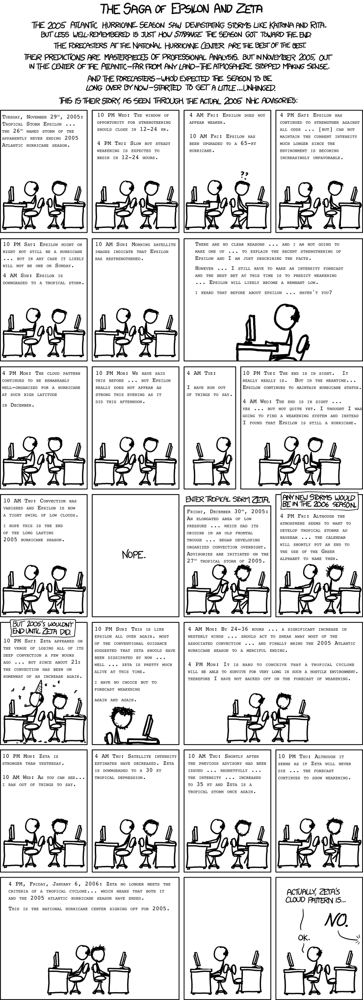

Epsilon and Zeta

Permanent link to this comic: https://xkcd.com/1126/
Image URL (for hotlinking/embedding): https://imgs.xkcd.com/comics/epsilon_and_zeta.png
THE SAGA OF EPSILON AND ZETA
The 2005 Atlantic hurricane season saw devastating storms like Katrina and Rita. But less well-remembered is just how
strange
the season got toward the end.
The forecasters at the National Hurricane Center are the best of the best.
Their predictions are masterpieces of professional analysis. But in November 2005, out in the center of the Atlantic - far from any land - the atmosphere stopped making sense.
And the forecasters - who'd expected the season to be long over by now - started to get a little
unhinged.
This is their story, as seen through the actual 2005 NHC Advisories:
[[Two men, one bald and one not, sit looking at their respective computers, at separate desks, back to back. The advisory is printed above them in caps
small-caps Courier type.]]
Tuesday, November 29th, 2005:
Tropical Storm Epsilon . . .
The 26th named storm of the apparently never ending 2005 Atlantic hurricane season.
[[The same scene, different text.]]
10 PM Wed: The window of opportunity for strengthening should close in 12-24 hr.
4 PM Thu: Slow but steady weakening is expected to begin in 12-24 hours.
[[The man with hair now has questions marks above his head.]]
4 AM Fri: Epsilon does not appear weaker.
10 AM Fri: Epsilon has been upgraded to a 65-kt hurricane.
[[The two still sit back-to-back.]]
4 PM Sat: Epsilon has continued to strengthen against all odds . . . [but] can not maintain the current intensity much longer since the environment is becoming increasingly unfavorable.
[[Ditto.]]
10 PM Sat: Epsilon might or might not still be a hurricane . . . but in any case it likely will not be one on Sunday.
4 AM Sun: Epsilon is downgraded to a tropical storm.
[[Yep.]]
10 AM Sun: Morning satellite images indicate that Epsilon has restrengthened.
[[A closer view of just the balding man at his desk.]]
There are no clear reasons . . . and I am not going to make one up . . . to explain the recent strengthening of Epsilon and I am just describing the facts.
However . . . I still have to make an intensity forecast and the best bet at this time is to predict weakening . . . Epsilon will likely become a remnant low.
I heard that before about epsilon . . . haven't you?
[[The two men still sit back to back, but the man with hair is now turning his head toward the other man, with his arm resting on the back of his chair. The bald man is leaning forward in his seat, toward his computer while typing.]]
4 PM Mon: The cloud pattern continues to be remarkably well-organized for a hurricane at such high latitude
in December.
[[The other man has turned back to his own screen.]]
10 PM Mon: We have said this before . . . but Epsilon really does not appear as strong this evening as it did this afternoon.
[[Just the bald guy now.]]
4 AM Tue:
I have run out of things to say.
[[The two of them again.]]
10 PM Tue: The end is in sight. It really really is. But in the meantime . . . Epsilon continues to maintain hurricane status.
4 AM Wed: The end is in sight . . . yes . . . but not quiet yet. I thought I was going to find a weakening system and instead I found that Epsilon is still a hurricane.
[[Ditto.]]
10 AM Thu: Convection has vanished and Epsilon is now a tight swirl of low clouds.
I hope this is the end of the long lasting 2005 hurricane season.
[[This panel is blank and just reads: Nope.]]
Enter Tropical Storm Zeta.
[[The men are still at their desks. The bald man is leaning back on his chair and staring at his screen, the other man's hair is noticeably disheveled, and he has started growing a five o'clock shadow.]]
Friday, December 30th, 2005: An elongated area of low pressure . . . which ahd its origins in an old frontal trough . . . began developing organized convection overnight. Advisories are initiated on the 27th tropical storm of 2005.
Any new storms would be in the 2006 season.
[[The men are still at their desks, the man with hair is even more bedraggled-looking.]]
4PM Fri: Although the atmosphere seems to want to develop tropical storms ad nauseam . . . the calendar will shortly put an end to the use of the Greek alphabet to name them.
But 2005's wouldn't end until Zeta did.
[[The bald man is now wearing a party hat and there is confetti in the air.]]
10 PM Sat: Zeta appeared on the verge of losing all of its deep convection a few hours ago . . . but since about 21z the convection has been on somewhat of an increase again.
[[A close view of the man with hair at his desk.]]
10 PM Sun: This is like Epsilon all over again. Most of the conventional guidance suggested that zeta should have been dissipated by now . . . well . . . zeta is pretty much alive at this time.
I have no choice but to forecast weakening
again and again.
[[Both of them at their desks.]]
4 AM Mon: By 24-36 hours . . . a significant increase in westerly winds . . . should act to shear away most of the associated convection . . . and finally bring the 2005 Atlantic hurricane season to a merciful ending.
4 PM Mon: It is hard to conceive that a tropical cyclone will be able to survive for very long in such a hostile environment. therefore I have not backed off on the forecast of weakening.
[[And again.]]
10 PM Mon: Zeta is stronger than yesterday.
10 AM Wed: As you can see. . . I ran out of things to say.
[[And again.]]
4 AM Thu: Satellite intensity estimates have decreased. Zeta is downgraded to a 30 kt tropical depression.
[[And again.]]
10 AM Thu: Shortly after the previous advisory had been issued . . . regretfully . . . the intensity . . . increased to 35 kt and Zeta is a tropical storm once again.
[[And again.]]
10 PM Thu: Although it seems as if Zeta will never die . . . the forecast continues to show weakening.
[[Both men are now leaning back in their chairs, exhausted.]]
4 PM, Friday, January 6, 2006: Zeta no longer meets the criteria of a tropical cyclone. . . which means that both it and the 2005 Atlantic hurricane season have ended.
This is the national hurricane center signing off for 2005.
[[The bald man still sits at his desk, the man with hair is no longer in his chair.]]
[[Again, we see the bald man at his desk and the other guy's empty desk.]]
Bald guy: Actually, Zeta's cloud pattern is
Hair guy: (out of panel) NO.
Bald guy: Ok.
{{Title text: The average error in the NHC forecasted position of a hurricane three days in the future has shrunk to a third of what it was in 1990--a staggering accomplishment. However, as you may have gathered, forecasts of future storm *strength* have proved more difficult to improve.}}
 A webcomic of romance,
A webcomic of romance,